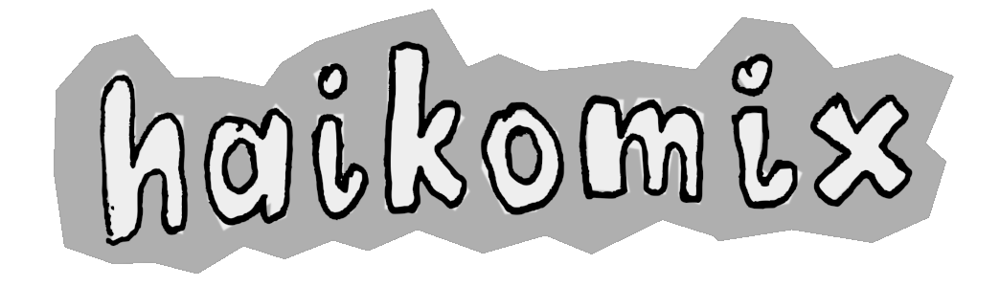
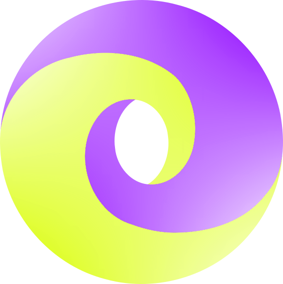

Darius J Chuck / Portfolio
This is a rough list of some of the projects and work I've been involved with.
This list is not complete and may be updated in the future.
Work at ZSiPONTWŁ w Łodzi
- Period: 2024-03 to present
- Description: Teaching future programmers at a technical college (technikum), part-time (weekends). Subjects include website design and publishing with HTML, CSS, CMS systems (Joomla!, WordPress), computer graphics (raster and vector), video and audio editing, database design and administration, using SQL. Software used includes Visual Studio Code, XAMPP (Apache, MySQL/MariaDB, PHP, phpMyAdmin), Microsoft Windows, GIMP, Inkscape, Google Chrome, Mozilla Firefox.
Nauka programowania (teaching programming)
- Period: 2024-02 to present
- URL: https://www.youtube.com/watch?v=ZmcZAioNd5E&list=PLDJ6Fr9rH_M26bmXoGGc6vTuqUaIBut7S
- Description: original programming course from scratch using a refreshed version of the iconic Wizard Book. On YouTube, in Polish.
JDAML – Jevko Data And Markup Language
- Period: 2023-12 to present
- URLs: https://jevko.org/jdaml.html | https://codeberg.org/jevko-org/jdaml
- Description: An experimental XML-like format built on top of Jevko, designed to map equally well to markup-oriented formats (such as HTML or XML) and data-oriented formats (such as JSON or YAML). Design and prototype implementation, including translation to and from HTML, XML, JSON. Design and implementation of formats on top of JDAML which integrate with JavaScript.

Webcomic experiments
- Period: 2023-10 to 2023-12
- Status: suspended
- URLs: https://djedr.github.io/haikomix/ | https://djedr.github.io/haker/
- Description: hand-drawn webcomics.


fitzJSON
- Period: 2023-06 to present
- Status: suspended
- URL: https://github.com/xtao-org/fitzjson
- Description: a JSON-compatible (i.e. a JSON superset) format optimized for configuration. An experiment. Designed the format, drafted a spec, wrote a reference implementation in JavaScript, as well as a grammar for Tree-sitter. Verified ECMA-404 compliance.

Meditating on the Wizard Book and language design
- Period: 2023-02 to 2023-08
- Status: concluded
- URL: https://xtao.org/wizardlang.html
- Description: hand-translated all code from the Wizard Book into a semi-imaginary programming language based on Jevko.
λDNA and LAST
- Period: 2022-08 to present
- URL: https://xtao.org/last.html
- Description: Two extremely minimal programming languages I have created, which are both minimal versions of Alonzo Church’s lambda calculus, inspired by John Tromp’s Binary Lambda Calculus (BLC).

Jevko
- Period: 2021-07 to present
- URL: https://jevko.org
- Description: a versatile minimal syntax for encoding tree-structured information as human-friendly text.

Presentation/interview about Jevko in Polish:
JsonHilo.js
- Period: 2021-06 to present
- URL: https://github.com/xtao-org/jsonhilo
- Description: a minimal library for fast lossless JSON parse event streaming, in pure JavaScript. Akin to SAX. JsonStrum is a related project. Verified ECMA-404 compliance, benchmarked against popular parsers.

Work at Standard Notes
- Period: 2021-02 to 2021-05
- Description:
- Summary: Back-end developer, encrypted note-taking app.
- Job title: Senior Software Engineer
- Roles: Back-end developer (TypeScript).
- Tasks: Auth back-end development, file server implementation, cryptographic library development, multifactor-authentication (TOTP) implementation, API design, bugfixing, code review
- Open-source: yes, GitHub profile
- Company type: small bootstrapped startup
- Team size: < 10
- Methodology: Custom Agile
- Programming disciplines: Object-Oriented, mixed
- Locations: 100% remote
- Time commitment: 24 h/week
- Technologies:
- Languages: TypeScript
- Frameworks and libraries: ExpressJS, superagent, TypeORM, InversifyJS, winston, otplib, ...
- Build tools: webpack
- Environments: Node.js, browser
- Clouds: Amazon Web Services
- Project management: Asana, Twist
- Code editors/IDEs: Visual Studio Code
- Data formats: JSON
- Other tools: Docker, GitHub, Git (+Gitflow), Datadog, ...
- Profilers: web browser built-ins
- Testing: Mocha/Chai, Jest, Istanbul
- Database systems: MySQL
- Operating system: Manjaro Linux
- Other: REST, JSON Web Token, nginx, DBeaver, docker-compose, Prettier, ESLint, DayJS, npm, yarn, semver...
TAO
- Period: 2020-01 to present
- URL: https://xtao.org
- Description: a label under which I publish content related to minimalism in computing – something I cultivate with passion.
Work at TomTom Germany
- Period: 2018-10 to 2019-12
- Description:
- Summary: Full stack development. Mainly back-end. Web applications for data processing and fusion. Internal tools for data visualisation (front-end, back-end, design, architecture).
- Job title: Software Engineer
- Roles: Back-end developer (Scala, Java), main front-end developer (TypeScript).
- Tasks: Development and maintenance of multiple web application back-ends; JSON REST API design and implementation; coordination with other teams, e.g. internal consumers of our APIs; documentation; design, development and optimization of a data-heavy front-end application...
- Team size: < 10
- Methodology: Scrum
- Programming disciplines: Functional, Object-Oriented
- Locations: Berlin, Germany; remote (~10 %)
- Technologies:
- Languages: Scala, Java, TypeScript, Python, HTML, CSS
- Frameworks and libraries: Akka (HTTP, Actors, Streams), Play, Guice, React 16+, Leaflet
- Build tools: Maven, ParcelJS
- Environments: JVM, browser, Node.js
- Clouds: Amazon Web Services, Azure
- Project management: Atlassian suite (Bitbucket, Confluence, JIRA)
- Code editors/IDEs: IntelliJ, Visual Studio Code
- Data formats: JSON, XML
- Other tools: Docker, Kubernetes, Terraform, Sonar, Jenkins, Git (+Gitflow)
- Profilers: VisualVM, honest-profiler, web browser built-ins
- Testing: TestNG, ScalaTest
- Database systems: PostgreSQL, SQLite
- Operating system: Linux (ArchLinux)
- Other: REST, JSON Schema, OpenAPI/Swagger, XML Schema